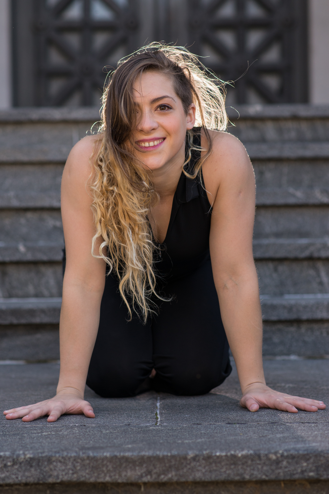

Datos Personales
- Nombre completo: Diana Sauval
- Fecha de nacimiento: 09/03/1994
- Lugar de nacimiento: Capital Federal, Buenos Aires, Argentina
Experiencia Laboral
- 2019: SKHIZO – Obra de Circo Contemporáneo
- Presentado en La Carpintería Teatro, Centro Cultural Cirujismo y Doble-T (La Plata)
- Directora e intérprete
- 2019: Fiesta Navideña del Municipio de Malvinas Argentinas
- Coréografa y acróbata
- 2019: Festival Wateke - Hipódromo de Palermo
- Coréografa y acróbata
- 2018: SKHIZO – Obra de Circo Contemporáneo
- Directora e intérprete
- 2018: Carrusel - Fiesta Nacional del Sol de San Juan
- Artista Circense
